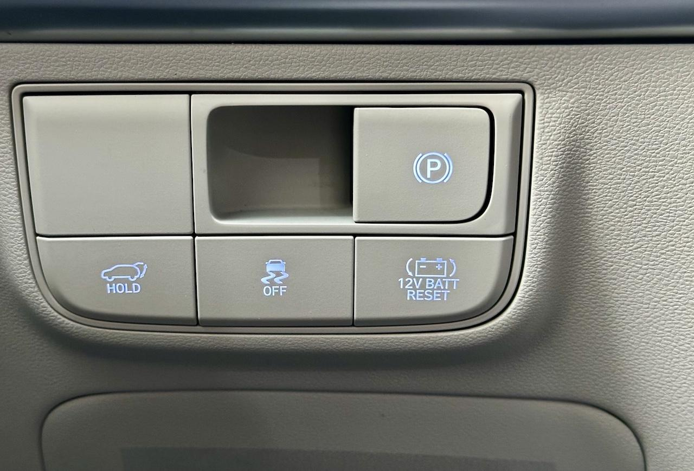

자동차 배터리가 방전되면 어떻게 해야 할까?
자동차의 배터리가 방전되면 정말 대부분의 것들을 할 수가 없다. 아예 시작부터 문제인게 스마트키로 차 문이 안 열린다. 어떻게 차 안에 들어가더라도 시동 조차 걸 수가 없다. 시동이 안 걸리니 차량 내부의 모든 기능들도 동작하지 않는다. 당연하게도 블루링크 등의 원격 제어 기능도 동작하지 않는다.
이렇게 자동차 배터리가 방전된 경우 자력으로 문을 열거나 시동을 걸 수 있는 방법이 있을까?
사건의 시작
어느 날 블루링크를 통해 아래 내용의 알림이 온 뒤 사건이 시작되었다.
Tucson 배터리(12v) 보호를 위해 원격제어가 제한되었습니다. 차량 주행 이후 원격제어 서비스를 다시 사용하실 수 있습니다.
당시에는 원격제어만 못 쓰고 다른 건 다 잘 되겠지 라며 그냥 넘겨버렸었는데 실제로는 배터리가 방전된다는 의미의 경고였던 알림이었다. 추운 겨울에 3주 가량 차량을 주차장에 방치했다 배터리 방전 사태를 겪고 만 것이다. 결국 나중에 차가 필요해서 주차장에 나왔다가 아무 것도 못 하는 난감한 상황을 맞이했더니 상당히 당황할 수밖에 없었다.
어쨌거나 여러 일이 있었지만 결과적으로 자력 해결이 가능했다. 그래서 이런 글이 탄생하게 되었다.
자동차 배터리가 방전되었을 때 자동차 문 열기
해답부터 말하자면 열쇠로 열면 된다. 뭔가 당연한 이야기 같지만 요즘 차 키는 스마트키라 별도의 열쇠가 없는 것처럼 보이기도 하고 거기다 자동차에도 열쇠를 끼우는 구멍이 안 보이기도 해서 어쩌면 이상하게 생각될 지도 모르겠다.
우선 열쇠는 자동차 구입 시 카마스터를 통해 받았을 것이니 잘 찾아보자. 요즘은 커버가 씌워진 작은 막대기 처럼 생겨서 열쇠가 아닌 것처럼 느낄 수도 있으니 다시 한번 잘 찾아보자. 참고로 제조사 등에 따라 스마트키에 열쇠가 내장된 형태도 있을 수 있다.
그 다음 보이지 않는다던 자동차 열쇠 구멍인데 사실은 이미 존재한다. 단지 손잡이 근처에 뚜껑(캡)이 씌워져서 잘 숨겨져 있을 뿐이다. 그런데 이 숨겨진 열쇠 캡을 뜯어내는 게 상당히 고난일 수도 있다. 이는 차종에 따라 좀 다를 수도 있으니 매뉴얼을 잘 읽어보고 열어보자. 참고로 투싼(NX4 HEV PE)의 경우 손잡이 끝 부분의 열쇠 캡 부분 하단의 구멍에 열쇠를 밀어넣고 강한 힘으로 뜯어내다 시피 해야 캡이 벗겨졌다.
자동차의 열쇠 구멍을 찾았으면 여기에 열쇠를 끼워 넣고 돌리면 차 문이 열린다. 사진을 올릴 수 있으면 좋겠지만 다시는 그 캡을 열고 싶지 않아서 사진이 없음을 양해 부탁드린다.
이제 차 안에 들어올 수 있게 되었을 것이다. 그런데....
비상 시동 걸기
배터리가 방전 되었는데 어떻게 시동을 걸 수 있을까? 혹시 완력으로 충전이라도 가능한 방법이 있을까? 물론 그런 건 없다.
애초에 배터리가 방전되었다는 개념이 조금 잘못 되었다는 점 부터 짚자. 사실은 배터리가 아직 완전히 방전되지 않았을 확률이 높다. 이런 방전 상황은 정확히 말해서 배터리 차단 상태로 보는 게 맞다. 배터리가 방전될 것 같으면 시동을 한번 걸 수 있는 수준의 전원은 남겨둔 뒤 배터리를 회로에서 차단시켜서 방전을 최대한 막는 모드가 바로 배터리 차단 상태인 것이다.
그렇다면 차단된 부분을 다시 풀면 어떻게든 시동을 한 번 걸어볼 수는 있게 된다. 이 기능은 운전자가 언제든 쓸 수 있게 버튼으로 만들어져 있는데 바로 '12V 배터리 리셋' 버튼이다.
 투싼 하이브리드(NX4 HEV PE)의 12V 배터리 리셋 버튼
투싼 하이브리드의 경우 위 사진과 같이 핸들(스티어링 휠) 좌측 약간 하단의 버튼 모여있는 곳에서 배터리 아이콘과 함께 '12V BATT RESET'이라고 쓰여진 12V 배터리 리셋 버튼을 찾을 수 있었다.
12V 배터리 리셋 버튼을 찼았다면 이 버튼을 누르고 나서 시동을 걸어보자. 운이 나쁘지 않다면 아마도 걸릴 것이다. 개인적으로는 한참을 추위로 고생하다 리셋 후 시동을 시도하니 굉장한 진동 후 시동이 걸리는 모습에 환호를 지를 뻔했다.
물론 리셋 후에도 시동을 거는 데 실패하면 배터리가 완전 방전된 상태일 수도 있다. 그리고 리셋 후 바로 시동을 걸지 못 하면 다시 차단 모드가 켜질 수도 있다. 어떤 차는 배터리 리셋 버튼이 없을 지도 모른다. 어쨌든 비상 시동이 안 걸리고 주변의 도움을 받을 수 없다면 침착하게 최후의 방법으로 진행하자.
12V 배터리? 내 차는 하이브리드인데?
12V 배터리는 일반적인 내연기관차에 들어있는 그 상자형 배터리를 말하는 게 맞다. 이 배터리는 차의 구동을 제외한 나머지 거의 모든 기능을 동작시키는 중요한 배터리다.
그런데 하이브리드차는 상대적으로 고용량 고전압 배터리가 들어있을 텐데 12V 배터리는 없는 게 아닐까?
물론 오해다. 하이브리드차에는 확실히 고전압 배터리가 장착되어 있지만 12V 배터리 또한 똑같이 장착되어 있다. 하이브리드차의 고전압 배터리는 그저 모터를 구동시키기 위한 목적으로만 사용된다. 그리고 여전히 구동을 제외한 나머지 모든 기능은 12V 배터리에 의존하고 있다.
결과적으로 하이브리드차도 동일하게 12V 배터리 리셋 버튼이 있을 수 있으며 같은 방법으로 비상 시동을 걸 수 있다.
최후의 방법
혹시나 주변에 도움을 청할 수 있는 차량 소유자가 마침 이 방면의 지식과 장비(?)가 있는 운 좋은 상황이라면 도움을 받을 수 있을 지도 모르겠다. 하지만 이건 좀 운이 필요할 것 같으니 넘어가자.
자동차를 구입했다면 당연하게도 자동차 보험에도 가입했을 것이다. 가입한 보험사를 통해 고장 신고나 긴급 출동을 요청할 수 있는데 배터리가 방전되었다고 하면 다들 알아 듣는다. 앱으로도 되지만 전화로 하는 것과 어떤 차이가 있는 지는 잘 모르겠다. 다만 전화 고장 신고는 대부분 상담원을 오래 기다리지 않아도 되는 듯하다.
긴급 출동의 경우 보험사가 가입자의 휴대폰을 통해 위치 추적을 할 수 있기 때문에 자세한 현재 위치를 모르더라도 큰 도움이 될 수도 있다. 위치 추적 시 사용자에게 동의를 구하기 때문에 프라이버시 문제도 없을 듯하다.
물론 긴급 출동 차량이 도착하려면 어느 정도 시간이 필요할 것이다. 도심 내라면 아마도 30분 정도면 오지 않을까 싶지만 어디까지나 추측일 뿐이다.
하여간 자력으로 해결되면 다행이지만 안 되면 긴급 출동을 통해 약간의 배터리 전원을 충전 받을 수는 있다. 다만 이 경우도 보닛을 열어야 하기 때문에 자력으로 자동차 문은 열어야 한다는 건 명심하자. 어쩌면 문을 여는 건 기사분이 도와주실 지도 모르겠지만 말이다.